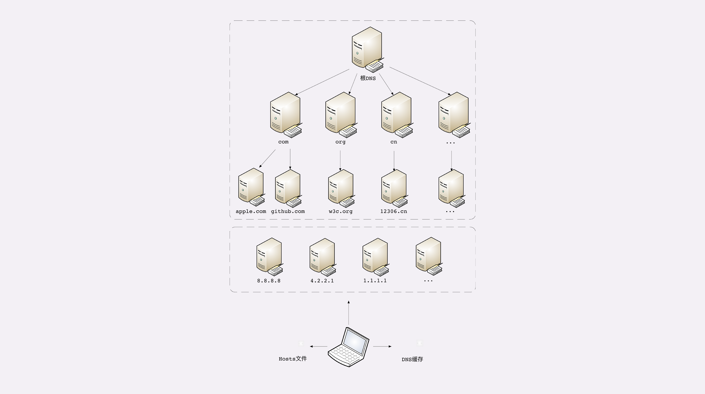

- 00 开篇词｜To Be a HTTP Hero.md.html
- 01 时势与英雄：HTTP的前世今生.md.html
- 02 HTTP是什么？HTTP又不是什么？.md.html
- 03 HTTP世界全览（上）：与HTTP相关的各种概念.md.html
- 04 HTTP世界全览（下）：与HTTP相关的各种协议.md.html
- 05 常说的“四层”和“七层”到底是什么？“五层”“六层”哪去了？.md.html
- 06 域名里有哪些门道？.md.html
- 07 自己动手，搭建HTTP实验环境.md.html
- 08 键入网址再按下回车，后面究竟发生了什么？.md.html
- 09 HTTP报文是什么样子的？.md.html
- 10 应该如何理解请求方法？.md.html
- 11 你能写出正确的网址吗？.md.html
- 12 响应状态码该怎么用？.md.html
- 13 HTTP有哪些特点？.md.html
- 14 HTTP有哪些优点？又有哪些缺点？.md.html
- 15 海纳百川：HTTP的实体数据.md.html
- 16 把大象装进冰箱：HTTP传输大文件的方法.md.html
- 17 排队也要讲效率：HTTP的连接管理.md.html
- 18 四通八达：HTTP的重定向和跳转.md.html
- 19 让我知道你是谁：HTTP的Cookie机制.md.html
- 20 生鲜速递：HTTP的缓存控制.md.html
- 21 良心中间商：HTTP的代理服务.md.html
- 22 冷链周转：HTTP的缓存代理.md.html
- 23 HTTPS是什么？SSLTLS又是什么？.md.html
- 24 固若金汤的根本（上）：对称加密与非对称加密.md.html
- 25 固若金汤的根本（下）：数字签名与证书.md.html
- 26 信任始于握手：TLS1.2连接过程解析.md.html
- 27 更好更快的握手：TLS1.3特性解析.md.html
- 28 连接太慢该怎么办：HTTPS的优化.md.html
- 29 我应该迁移到HTTPS吗？.md.html
- 30 时代之风（上）：HTTP2特性概览.md.html
- 31 时代之风（下）：HTTP2内核剖析.md.html
- 32 未来之路：HTTP3展望.md.html
- 33 我应该迁移到HTTP2吗？.md.html
- 34 Nginx：高性能的Web服务器.md.html
- 35 OpenResty：更灵活的Web服务器.md.html
- 36 WAF：保护我们的网络服务.md.html
- 37 CDN：加速我们的网络服务.md.html
- 38 WebSocket：沙盒里的TCP.md.html
- 39 HTTP性能优化面面观（上）.md.html
- 40 HTTP性能优化面面观（下）.md.html
- 结束语 做兴趣使然的Hero.md.html
- 捐赠
06 域名里有哪些门道？
在上一讲里，我们学习了 HTTP 协议使用的 TCP/IP 协议栈，知道了 HTTP 协议是运行在 TCP/IP 上的。
IP 协议的职责是“网际互连”，它在 MAC 层之上，使用 IP 地址把 MAC 编号转换成了四位数字，这就对物理网卡的 MAC 地址做了一层抽象，发展出了许多的“新玩法”。
例如，分为 A、B、C、D、E 五种类型，公有地址和私有地址，掩码分割子网等。只要每个小网络在 IP 地址这个概念上达成一致，不管它在 MAC 层有多大的差异，都可以接入 TCP/IP 协议栈，最终汇合进整个互联网。
但接入互联网的计算机越来越多，IP 地址的缺点也就暴露出来了，最主要的是它“对人不友好”，虽然比 MAC 的 16 进制数要好一点，但还是难于记忆和输入。
怎么解决这个问题呢？
那就“以其人之道还治其人之身”，在 IP 地址之上再来一次抽象，把数字形式的 IP 地址转换成更有意义更好记的名字，在字符串的层面上再增加“新玩法”。于是，DNS 域名系统就这么出现了。
域名的形式
在第 4 讲曾经说过，域名是一个有层次的结构，是一串用“.”分隔的多个单词，最右边的被称为“顶级域名”，然后是“二级域名”，层级关系向左依次降低。
最左边的是主机名，通常用来表明主机的用途，比如“www”表示提供万维网服务、“mail”表示提供邮件服务，不过这也不是绝对的，名字的关键是要让我们容易记忆。
看一下极客时间的域名“time.geekbang.org”，这里的“org”就是顶级域名，“geekbang”是二级域名，“time”则是主机名。使用这个域名，DNS 就会把它转换成相应的 IP 地址，你就可以访问极客时间的网站了。
域名不仅能够代替 IP 地址，还有许多其他的用途。
在 Apache、Nginx 这样的 Web 服务器里，域名可以用来标识虚拟主机，决定由哪个虚拟主机来对外提供服务，比如在 Nginx 里就会使用“server_name”指令：
server {
listen 80; # 监听 80 端口
server_name time.geekbang.org; # 主机名是 time.geekbang.org
...
}
域名本质上还是个名字空间系统，使用多级域名就可以划分出不同的国家、地区、组织、公司、部门，每个域名都是独一无二的，可以作为一种身份的标识。
举个例子吧，假设 A 公司里有个小明，B 公司里有个小强，于是他们就可以分别说是“小明.A 公司”，“小强.B 公司”，即使 B 公司里也有个小明也不怕，可以标记为“小明.B 公司”，很好地解决了重名问题。
因为这个特性，域名也被扩展到了其他应用领域，比如 Java 的包机制就采用域名作为命名空间，只是它使用了反序。如果极客时间要开发 Java 应用，那么它的包名可能就是“org.geekbang.time”。
而 XML 里使用 URI 作为名字空间，也是间接使用了域名。
域名的解析
就像 IP 地址必须转换成 MAC 地址才能访问主机一样，域名也必须要转换成 IP 地址，这个过程就是“域名解析”。
目前全世界有几亿个站点，有几十亿网民，而每天网络上发生的 HTTP 流量更是天文数字。这些请求绝大多数都是基于域名来访问网站的，所以 DNS 就成了互联网的重要基础设施，必须要保证域名解析稳定可靠、快速高效。
DNS 的核心系统是一个三层的树状、分布式服务，基本对应域名的结构：
- 根域名服务器（Root DNS Server）：管理顶级域名服务器，返回“com”“net”“cn”等顶级域名服务器的 IP 地址；
- 顶级域名服务器（Top-level DNS Server）：管理各自域名下的权威域名服务器，比如 com 顶级域名服务器可以返回 apple.com 域名服务器的 IP 地址；
- 权威域名服务器（Authoritative DNS Server）：管理自己域名下主机的 IP 地址，比如 apple.com 权威域名服务器可以返回 www.apple.com 的 IP 地址。

在这里根域名服务器是关键，它必须是众所周知的，否则下面的各级服务器就无从谈起了。目前全世界共有 13 组根域名服务器，又有数百台的镜像，保证一定能够被访问到。
有了这个系统以后，任何一个域名都可以在这个树形结构里从顶至下进行查询，就好像是把域名从右到左顺序走了一遍，最终就获得了域名对应的 IP 地址。
例如，你要访问“www.apple.com”，就要进行下面的三次查询：
- 访问根域名服务器，它会告诉你“com”顶级域名服务器的地址；
- 访问“com”顶级域名服务器，它再告诉你“apple.com”域名服务器的地址；
- 最后访问“apple.com”域名服务器，就得到了“www.apple.com”的地址。
虽然核心的 DNS 系统遍布全球，服务能力很强也很稳定，但如果全世界的网民都往这个系统里挤，即使不挤瘫痪了，访问速度也会很慢。
所以在核心 DNS 系统之外，还有两种手段用来减轻域名解析的压力，并且能够更快地获取结果，基本思路就是“缓存”。
首先，许多大公司、网络运行商都会建立自己的 DNS 服务器，作为用户 DNS 查询的代理，代替用户访问核心 DNS 系统。这些“野生”服务器被称为“非权威域名服务器”，可以缓存之前的查询结果，如果已经有了记录，就无需再向根服务器发起查询，直接返回对应的 IP 地址。
这些 DNS 服务器的数量要比核心系统的服务器多很多，而且大多部署在离用户很近的地方。比较知名的 DNS 有 Google 的“8.8.8.8”，Microsoft 的“4.2.2.1”，还有 CloudFlare 的“1.1.1.1”等等。
其次，操作系统里也会对 DNS 解析结果做缓存，如果你之前访问过“www.apple.com”，那么下一次在浏览器里再输入这个网址的时候就不会再跑到 DNS 那里去问了，直接在操作系统里就可以拿到 IP 地址。
另外，操作系统里还有一个特殊的“主机映射”文件，通常是一个可编辑的文本，在 Linux 里是“/etc/hosts”，在 Windows 里是“C:\WINDOWS\system32\drivers\etc\hosts”，如果操作系统在缓存里找不到 DNS 记录，就会找这个文件。
有了上面的“野生”DNS 服务器、操作系统缓存和 hosts 文件后，很多域名解析的工作就都不用“跋山涉水”了，直接在本地或本机就能解决，不仅方便了用户，也减轻了各级 DNS 服务器的压力，效率就大大提升了。
下面的这张图比较完整地表示了现在的 DNS 架构。

在 Nginx 里有这么一条配置指令“resolver”，它就是用来配置 DNS 服务器的，如果没有它，那么 Nginx 就无法查询域名对应的 IP，也就无法反向代理到外部的网站。
resolver 8.8.8.8 valid=30s; # 指定 Google 的 DNS，缓存 30 秒
域名的“新玩法”
有了域名，又有了可以稳定工作的解析系统，于是我们就可以实现比 IP 地址更多的“新玩法”了。
第一种，也是最简单的，“重定向”。因为域名代替了 IP 地址，所以可以让对外服务的域名不变，而主机的 IP 地址任意变动。当主机有情况需要下线、迁移时，可以更改 DNS 记录，让域名指向其他的机器。
比如，你有一台“buy.tv”的服务器要临时停机维护，那你就可以通知 DNS 服务器：“我这个 buy.tv 域名的地址变了啊，原先是 1.2.3.4，现在是 5.6.7.8，麻烦你改一下。”DNS 于是就修改内部的 IP 地址映射关系，之后再有访问 buy.tv 的请求就不走 1.2.3.4 这台主机，改由 5.6.7.8 来处理，这样就可以保证业务服务不中断。
第二种，因为域名是一个名字空间，所以可以使用 bind9 等开源软件搭建一个在内部使用的 DNS，作为名字服务器。这样我们开发的各种内部服务就都用域名来标记，比如数据库服务都用域名“mysql.inner.app”，商品服务都用“goods.inner.app”，发起网络通信时也就不必再使用写死的 IP 地址了，可以直接用域名，而且这种方式也兼具了第一种“玩法”的优势。
第三种“玩法”包含了前两种，也就是基于域名实现的负载均衡。
这种“玩法”也有两种方式，两种方式可以混用。
第一种方式，因为域名解析可以返回多个 IP 地址，所以一个域名可以对应多台主机，客户端收到多个 IP 地址后，就可以自己使用轮询算法依次向服务器发起请求，实现负载均衡。
第二种方式，域名解析可以配置内部的策略，返回离客户端最近的主机，或者返回当前服务质量最好的主机，这样在 DNS 端把请求分发到不同的服务器，实现负载均衡。
前面我们说的都是可信的 DNS，如果有一些不怀好意的 DNS，那么它也可以在域名这方面“做手脚”，弄一些比较“恶意”的“玩法”，举两个例子：
- “域名屏蔽”，对域名直接不解析，返回错误，让你无法拿到 IP 地址，也就无法访问网站；
- “域名劫持”，也叫“域名污染”，你要访问 A 网站，但 DNS 给了你 B 网站。
好在互联网上还是好人多，而且 DNS 又是互联网的基础设施，这些“恶意 DNS”并不多见，你上网的时候不需要太过担心。
小结
这次我们学习了与 HTTP 协议有重要关系的域名和 DNS，在这里简单小结一下今天的内容：
- 域名使用字符串来代替 IP 地址，方便用户记忆，本质上一个名字空间系统；
- DNS 就像是我们现实世界里的电话本、查号台，统管着互联网世界里的所有网站，是一个“超级大管家”；
- DNS 是一个树状的分布式查询系统，但为了提高查询效率，外围有多级的缓存；
- 使用 DNS 可以实现基于域名的负载均衡，既可以在内网，也可以在外网。
课下作业
- 在浏览器地址栏里随便输入一个不存在的域名，比如就叫“www. 不存在.com”，试着解释一下它的 DNS 解析过程。
- 如果因为某些原因，DNS 失效或者出错了，会出现什么后果？
欢迎你把自己的答案写在留言区，与我和其他同学一起讨论。如果你觉得有所收获，也欢迎把文章分享给你的朋友。

© 2019 - 2023 Liangliang Lee. Powered by gin and hexo-theme-book.